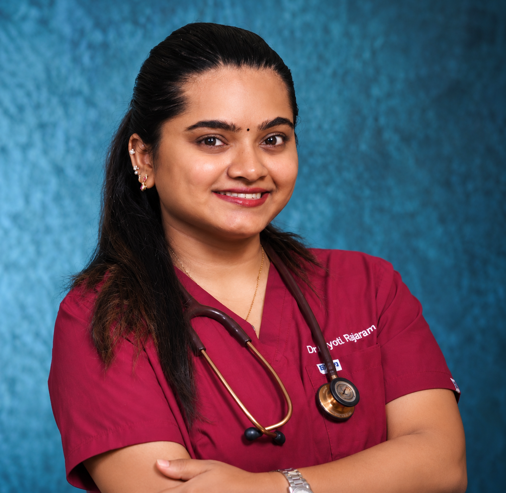
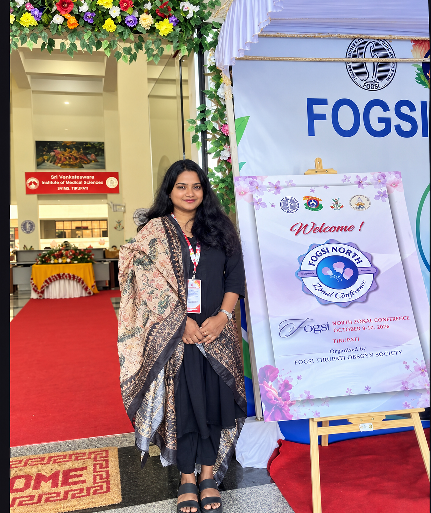

Clinical service
Contributing through medical responsibilities within the Indian Railways healthcare system.
I’m Dr. Jyoti Rajaram, a medical professional working with Indian Railways, with a keen interest in women’s health, reproductive medicine, and academic research.

My professional journey brings together clinical responsibilities, public service, and an ongoing curiosity for medical research.
After completing my MBBS at Madurai Medical College and Hospital, I began my professional journey in clinical care and later joined the Indian Railways medical cadre as an Additional Divisional Medical Officer.
I’m especially interested in women’s health and reproductive medicine, and in learning through academic discussion, clinical case presentations, and evidence-informed research.
View professional profileContributing through medical responsibilities within the Indian Railways healthcare system.
Exploring clinical questions through case reports, academic exchange, and continued learning.
A professional interest in women’s health and reproductive medicine.
A snapshot of the education and professional roles that have shaped my medical journey.
Western Railway · Dahod, Gujarat, India
Current role · As listed on LinkedInProfessional role · Indian Railways
Indian Railways Institute of Financial Management, Telangana
Madurai Medical College & Hospital
A foundation built through formal medical education, leadership, and curiosity.
Madurai Medical College and Hospital (MDUMC), Madurai
Physiology · General Medicine (as listed)School education and student leadership
House Captain · Head Girl · Best Sports Girl of the YearAcademic participation is an important part of my ongoing professional learning.

ACADEMIC PRESENTATIONClinical case poster presented on “A Bruise Before the Blood Pressure: Partial Atypical HELLP Syndrome…” The title is shortened here to match the visible LinkedIn preview.
A single-author case-report abstract was accepted for presentation, as described in the LinkedIn post shared for this portfolio.
AREAS OF INTEREST See updates on LinkedInConference participation details are based on the public LinkedIn preview supplied. Full abstract text and publication links can be added when available.
Professional memberships and additional training that support academic awareness and ethical research practice.
International Society of Ultrasound in Obstetrics and Gynecology
Dates shown on LinkedIn: Apr–Oct 2026U.S. Department of Health and Human Services (HHS)
Issued June 2026Office of the Assistant Secretary for Health (OASH)
Issued June 2026American Society for Reproductive Medicine
Issued March 2026Doctor · Registration credential listed on LinkedIn
Issued August 2025Credential names and issue dates are based on the profile screenshots and publicly visible LinkedIn information. Original certificates or verification links can be added after review.
For academic discussions, research collaboration, professional enquiries, or appointment-related requests through the appropriate official channel, please get in touch.
Complete the details and your email application will open with the request prepared.